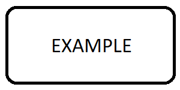

Specification Directives
Types
Five types are provided for manually written specifications:
srsA software requirement, usually derived to specs. A srs needs to be tested.specAn architectural or design specification, e.g. a use case or resource usage. It does not directly link to source code but needs to be refined and linked to other specs, mods, interfaces or units. A spec needs to be tested.modA software module. This element has an informative nature, it links to the module documentation and provides a brief description of the module. It does not need to be tested directly.interfaceAn interface between two modules in the architecture. Needs to be linked to the caller unit, the callee unit and if applicable to the interface unit. Interface tests are obligatory. The usage in software module design is deprecated.unitA single functionality, which is not split any further, usually a class or a function. It refers to source code and is tested.
Two additional types of are not intended to be used manually. They are generated by Dim when exporting data to reStructuredText.
requirementAn input requirement, system requirement or a software requirement. Requirements have to be linked to the software architecture and software module design. Note, that software requirements in Dim are deprecated, write them in Sphinx directly as srs.informationAdditional non-binding information.
See Traceability chapter for information about how to connect these elements.
{kind=link}
If you use interface with an ID starting with SMD_, an error will be raised during the
build. To skip that check, set the variable dox_trace_allow_deprecated in conf.py to True:
dox_trace_allow_deprecated = True
Syntax
To create a specification, use one of the following the directives:
.. srs:: <unique_id>.. spec:: <unique_id>.. mod:: <unique_id>.. interface:: <unique_id>... unit:: <unique_id>
The description is placed into the content part of the directive. It can be simple text or any other complex Sphinx syntax including headings. In the following example many attributes are shown automatically, which are explained in further sections on this guideline page.
The ID is rendered as HTML link to itself, so the anchor can be simply copied from the address bar of the browser and e.g. pasted into a ticket.
Example
rst:
.. srs:: SRS_topic_aspect
Description of the **srs**.
.. mod:: SWA_mod_name
Description of the **mod**.
.. spec:: SWA_feature_id1
Description of the **spec**.
.. image:: ../_static/example.png
.. interface:: SWA_feature_id2
Description of
the **interface**.
.. unit:: SMD_module_classX
Description of
the **unit**.
html:
|
Asil: not_set | Cal: not_set | Upstream Asil: - | Upstream Cal: - |
Description of the srs. |
|
Asil: not_set | Cal: not_set | Reuse: - | Usage: - | Upstream Asil: - | Upstream Cal: - |
Description of the mod. |
|
Asil: not_set | Cal: not_set | Upstream Asil: - | Upstream Cal: - |
Description of the spec.  |
|
Asil: not_set | Cal: not_set | Upstream Asil: - | Upstream Cal: - |
Description of the interface. |
|
Asil: not_set | Cal: not_set | Upstream Asil: - | Upstream Cal: - |
Description of the unit. |
Naming Convention of IDs
The naming convention of IDs is independent from the type. The names must be unique. Use short but concise strings.
Software Requirements:
SRS_<topic>_<id>Software Architecture:
SWA_<aspect/feature>_<id>For mods use:SWA_mod_<moduleName>Software Module Design:
SMD_<moduleName>_<id>For units use the class name and/or method name:SMD_<moduleName>_<className>::<methodName>
Examples:
.. srs:: SRS_Deployment_FunctionalSafety
.. mod:: SWA_mod_xcpEthernetAdapter
.. spec:: SWA_XCP_Paging
.. unit:: SMD_xcp_XcpSlave
.. unit:: SMD_xcp_XcpSlave::dispatcher
Sphinx Links
The specifications can be referenced from any other location using the regular Sphinx ref.
Note, that a ref is only a simple link to navigate through the documentation. The default
display name is the last part of ID.
Example
rst:
Links to
:ref:`SMD_module_classX`,
:ref:`SRS_topic_aspect <SRS_topic_aspect>` and
:ref:`some text <SWA_feature_id1>`.
html:
Links to classX, SRS_topic_aspect and some text. |
To add references for traceability, use the refs attribute of the specification directives.